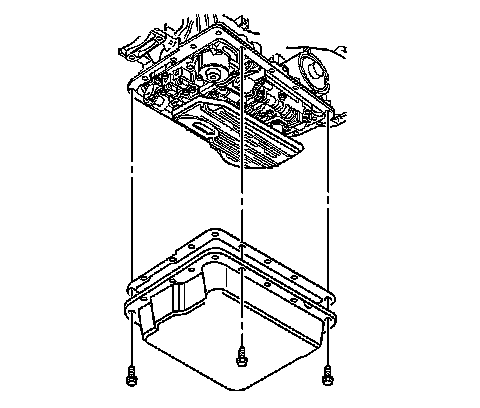
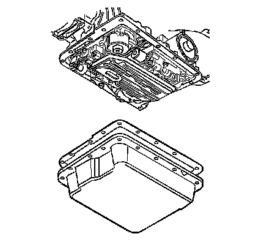
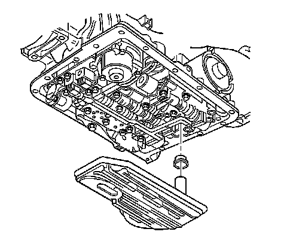
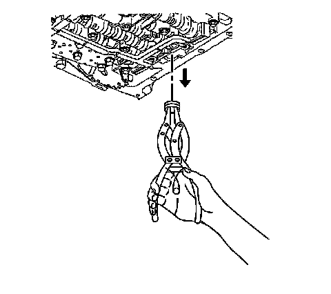
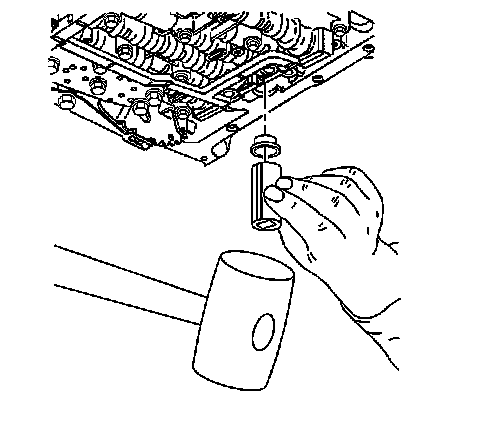

4L60-E/4L65-E/4L70-E Automatic Transmission
Automatic Transmission Fluid and Filter Replacement
Removal Procedure
1. Raise and suitably support the vehicle. Refer to Lifting and Jacking the Vehicle.
2. Place a drain pan under the transmission oil pan.
3. Remove the oil pan drain plug, if equipped.
4. If necessary, remove the bolts and position aside the range selector cable bracket for clearance while lowering the pan. It is not necessary to remove the cable from the lever or bracket.
5. Remove the catalytic converter.
6. Remove the oil pan bolts from the front and sides of the pan only.
7. Loosen the rear oil pan bolts approximately 4 turns.
8. Lightly tap the oil pan with a rubber mallet in order to loosen the pan to allow the fluid to drain.

9. Remove the remaining oil pan bolts.

10. Remove the oil pan and the gasket.

11. Grasp firmly while pulling down with a twisting motion in order to remove the filter.

12. Remove and discard the filter seal. The filter seal may be stuck in the pump; if necessary, carefully use pliers or another suitable tool to remove the seal.
13. Inspect the fluid color.
14. Inspect the filter. Pry the metal crimping away from the top of the filter and pull apart. The filter may contain the following evidence for root cause diagnosis:
^ Clutch material
^ Bronze slivers indicating bushing wear
^ Steel particles
15. Clean the transmission case and the oil pan gasket surfaces with solvent, and air dry. You must remove all traces of the old gasket material.
Installation Procedure

1. Coat the NEW filter seal with automatic transmission fluid.
2. Install the NEW filter seal into the transmission case. Tap the seal into place using a suitable size socket.
3. Install the NEW filter.
4. Install the oil pan and NEW gasket.
Notice: Refer to Fastener Notice.
5. Install the oil pan bolts.
Tighten the bolts alternately and evenly to 11 N.m (97 lb in).
6. Install the catalytic converter.
7. If previously removed, install the range selector cable bracket and bolts.
Tighten the bolts to 25 N.m (18 lb ft).
8. Apply a small amount of sealant GM P/N 12346004 (Canadian P/N 10953480), or equivalent to the threads of the oil pan drain plug, if equipped.
9. Lower the vehicle.
10. Fill the transmission to the proper level with DEXRON(R) VI transmission fluid. Refer to Transmission Fluid Checking and Fluid Capacity Specifications.
11. Check the COLD fluid level reading for initial fill only.
12. Inspect the oil pan gasket for leaks.